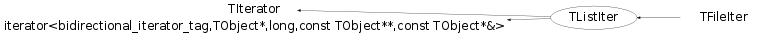

Function Members (Methods)
public:
| TListIter(const TListIter& iter) | |
| TListIter(const TList* l, Bool_t dir = kIterForward) | |
| virtual | ~TListIter() |
| static TClass* | Class() |
| virtual const TCollection* | GetCollection() const |
| virtual Option_t* | GetOption() const |
| virtual TClass* | IsA() const |
| virtual TObject* | Next() |
| virtual bool | operator!=(const TIterator& aIter) const |
| bool | operator!=(const TListIter& aIter) const |
| TObject* | TIterator::operator()() |
| virtual TObject* | operator*() const |
| virtual TIterator& | operator=(const TIterator& rhs) |
| TListIter& | operator=(const TListIter& rhs) |
| virtual void | Reset() |
| void | SetOption(Option_t* option) |
| virtual void | ShowMembers(TMemberInspector& insp) |
| virtual void | Streamer(TBuffer& b) |
| void | StreamerNVirtual(TBuffer& b) |
protected:
| TListIter() |
Class Charts
{kind=link}
{kind=link}
{kind=link}
{kind=link}

Function documentation
TListIter(const TList* l, Bool_t dir = kIterForward)
Create a new list iterator. By default the iteration direction is kIterForward. To go backward use kIterBackward.